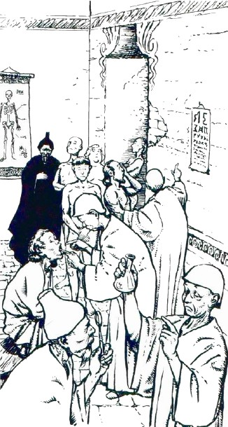
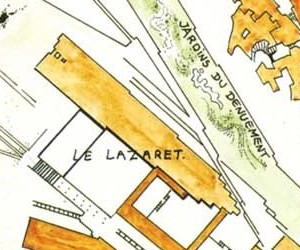

Entrer à Laelith
Tout citoyen de Laelith (on entend par là tout propriétaire immobilier ou toute personne pouvant justifier d'un emploi à plein temps dans la cité) possède un laissez-passer gratuit et permanent lui permettant d'entrer et sortir de la cité à sa guise. Le renouvellement de ce laissez-passer est toutefois payant en cas de perte ou de vol. Les étrangers doivent eux payer une taxe d'entrée s'élevant à 10 po et valable trois mois, au cours desquels ils peuvent entrer et sortir librement. C'est l'entrée, et non pas la durée du séjour à Laelith, qui est taxée, donc une personne peut en toute légalité rester plus de trois mois en ville sans avoir à s'acquitter de nouveau de la taxe. Ces laissez-passer à durée limitée sont remis au moment du règlement de la taxe, et datés avec une encre spéciale de couleur rouge. Chaque saison (printemps, été, automne, hiver) les autorités de Laelith changent la couleur du papier pour éviter les contre-façons. Les animaux vivants sont eux taxés suivant un autre barème, celui des marchandises, dont doit s'acquitter toute personne, même un citoyen de Laelith. Les chevaux, ne pouvant pas circuler à l'intérieur de la cité de par les nombreux escaliers que comportent la ville, doivent être hébergés dans les écuries au nord-est, où à celles du Lazaret.
Les portes de l'ouest et du sud
La majorité des pèlerins et des commerçants se rendant à Laelith viennent de l'ouest (du Calimshan, du Téthyr ou bien d'Amn). Après des semaines de marche sur la route du Couchant, la majorité choisit d'abréger la fin du voyage en empruntant le périlleux chemin qui escalade la falaise de Vorn haute de 1400 mètres. Après une rude ascension au milieu des ookhabs, ils parviennent alors directement aux portes du Lazaret, sur la terrasse de la Main qui travaille. Là, la garnison du Lazaret les reçoit et vérifie les laisser-passer. S'ils en possèdent un, les gardes effectuent une rapide fouille aléatoire de leur bagages, prélèvent les éventuelles taxes sur ceux-ci, puis les voyageurs peuvent pénétrer librement en ville. Les autres sont par contre conduit systématiquement au Lazaret.
D'autres voyageurs préfèrent ne pas prendre de risque si près du but sur le chemin de la falaise, et contournent cette dernière au sud par la route du Long Détour. Ils rejoignent alors peu avant les portes de la cité les caravanes en provenance de la Mer Étincelante, et les voyageurs des vieux empires de l'est (Chessenta, Unther ou Mulhorande) qui ont emprunté la piste longeant les deux lacs par le sud. Tout ce petit monde se présente alors à la porte de l'Immense Solitude Septentrionale (une autre porte existait autrefois, celle de l'Ivresse Enchanteresse, mais elle a été condamnée pour raisons de sécurité il y a fort longtemps maintenant). Là, les visiteurs sont traités de la même manière que ceux venant de la falaise de Vorn. S'ils n'ont pas de laissez-passer valides, ils sont conduits au Lazaret.
Environ 85% des voyageurs arrivent à Laelith par les portes de l'ouest, du sud ou au port. On estime à plus de 1000 par jour les personnes ainsi contrôlées.
Le port
Les voyageurs venant du nord, du Bief de Vilhon ou des contrées du Mitan, sont généralement plus riches et bien moins nombreux. La majorité d'entre eux prend un bateau en Azilian ou en Agramor, et débarque directement au port de la cité sainte. La procédure est là un peu plus souple, les autorités s'étant avec le temps rendu compte que les risques de contaminations apportés par ces voyageurs sont bien moindre que ceux apportés par les portes ouest et sud. Le contrôle des laissez-passer et des cargaisons est aléatoire et l'envoi au Lazaret est exceptionnel, laissé au libre jugement des prêtres supervisant les arrivées maritimes. Ceci représente quelques centaines de personnes par jour, car nombreux sont les voyageurs du royaumes qui préfèrent un trajet tranquille sur le lac à une longue marche sur de mauvaises routes. Pendant ce temps, les cargaisons sont stockées dans des entrepôts prévus à cet effet.
Les portes du nord
Peu nombreux sont les voyageurs de l'est qui coupent à travers le désert des Marches du Couchant, ou bien ceux longeant le lac au nord entre Olizya et Laelith. Ces routes ne sont en effet aucunement entretenues, et la chaleur et la sécheresse dans cette région a de quoi repousser plus d'un voyageur pourtant motivé. Toutefois certains tentent tout de même l'aventure, et arrivent à Laelith à la porte Nord, où la procédure est simplifiée. Contrôle systématique des laissez-passer et des cargaisons, mais aucun contrôle sanitaire ni envoi au Lazaret.
Une deuxième porte existe au nord, plus petite, reliant la terrasse du Nuage aux Pics des Mages. Elle est communément appelée la porte des Mages. Son accès est limité aux membres de cette communauté. L'entrée de marchandises n'est pas admise à cet endroit, et les laissez-passer permettant de l'emprunter sont vendus directement par l'université des Pics des Mages. Même un citoyen de Laelith ne peut l'emprunter s'il ne possède pas ce passe spécial. Sa validité est permanente, mais il est retiré aux magiciens lorsqu'ils quittent définitivement la communauté.
Le Lazaret
Le Lazaret est avant tout un hôpital et un hospice. Il est composé de quatre pavillons à un étage, chacun administré par un des quatre temples de Laelith. Quel que soit le pavillon, le premier étage est réservé aux patients de longue durée, généralement originaires de Laelith. Il est a noté que le Lazaret n'a pas le droit de refuser des soins à un patient. Les voyageurs dirigés au Lazaret sont soumis à une quarantaine afin de limiter les risques de propagations de maladies et d'épidémies dans la cité. La garde les confie donc à la Commission de santé des quatre temples pour deux jours, au cour desquels ils passeront par les quatre pavillons.
En premier lieu les voyageurs sont conduits au pavillon du Poisson d'argent, reconnaissable à l'immense fontaine à son entrée. Là, des prêtres aux vêtements bleus procèdent à un examen de santé général afin de détecter de possibles maladies.
Puis ils sont conduits au pavillon de l'Oiseau de feu, où brûle en permanence un grand brasier. Des prêtres aux vêtements rouges sont chargés d'examiner en détail leurs blessures, leurs plaies et leurs fractures.
Le deuxième jour, les voyageurs considérés aptes sont alors conduits au pavillon du Nuage, décoré de majestueux ornements en cristal pointant vers le ciel, et où des prêtres aux vêtements blancs vont les écouter. Cet entretien a pour but de détecter les maladies mentales.
SÉRUM DE VÉRITÉ ?
Le sérum qu'administrent les prêtres aux étrangers est en réalité de l'eau, car un vrai sérum reviendrait trop cher. Mais la manœuvre est dissuasive, la plupart des visiteurs pensant s'attirer les foudres des dieux s'ils mentent.
Enfin, le périple se termine au pavillon du Crâne, où siège une énorme sculpture en forme de crâne. Des prêtres aux vêtements noirs vont leur administrer un « sérum de vérité » et les questionner longuement sur leurs intentions afin de repérer les possibles fauteurs de troubles ou autres hérétiques. Suivant les réponses données, la police secrète et la garde profiteront de la nuit pour éliminer les gêneurs. Toute information intéressante est soigneusement consignée et archivée au temple du Crâne.
Au matin du troisième jour, les simples voyageurs et les commerçants qui ont réussi à passer toutes les épreuves sont libres et des prêtres les dirigeront suivant leur activées : un commerçant à la Haute Guilde ou un magicien aux Pics des Mages, par exemple. Les pèlerins et les clercs, par contre, se voient adresser un discours leur expliquant la procédure d'affiliation des temples avant de pouvoir sortir. Ils ont quatre jours pour s'affilier à un des quatre temples car, passé ce délai, ils pourront être accusés d'hérésie.